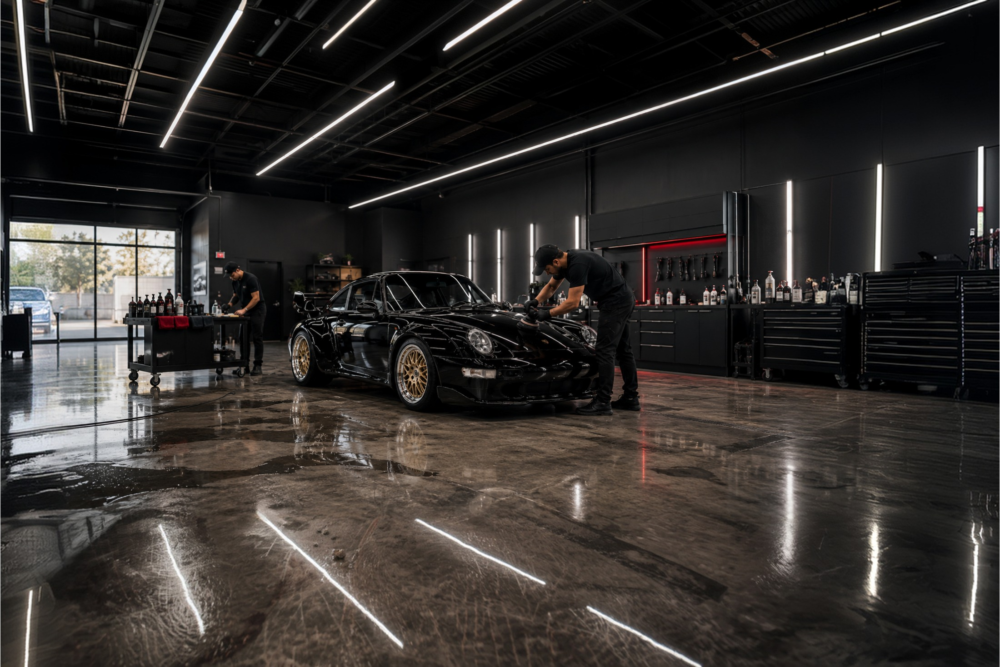
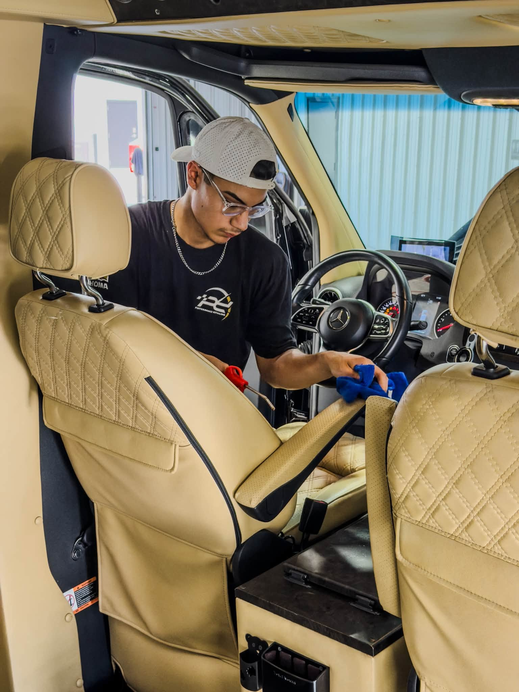
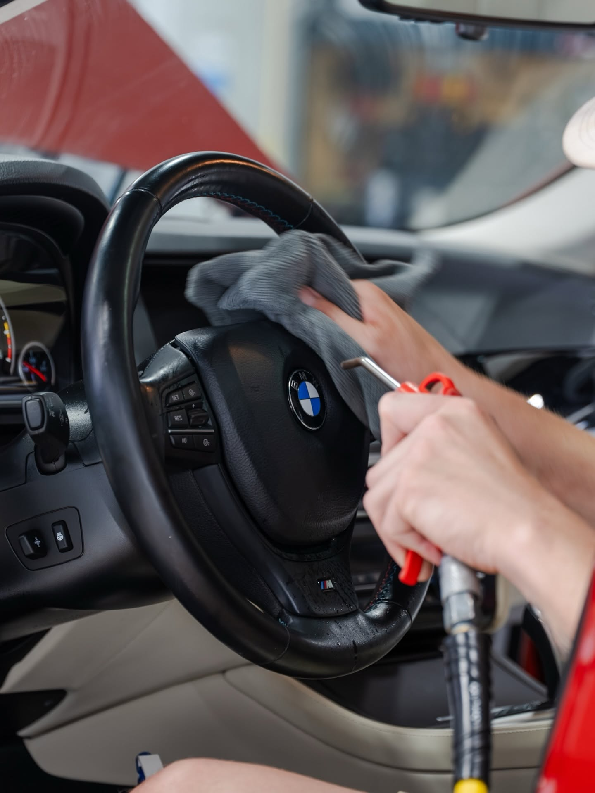
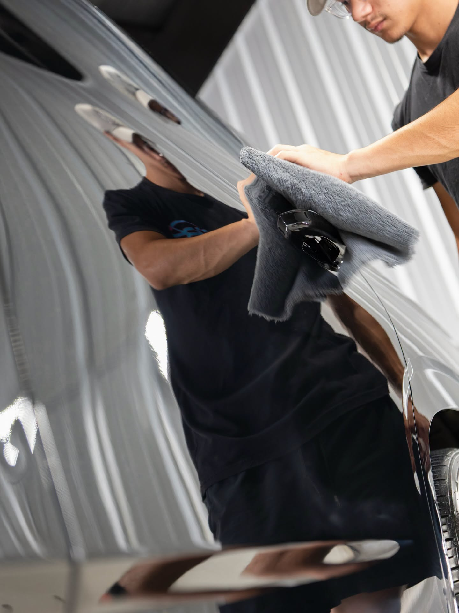
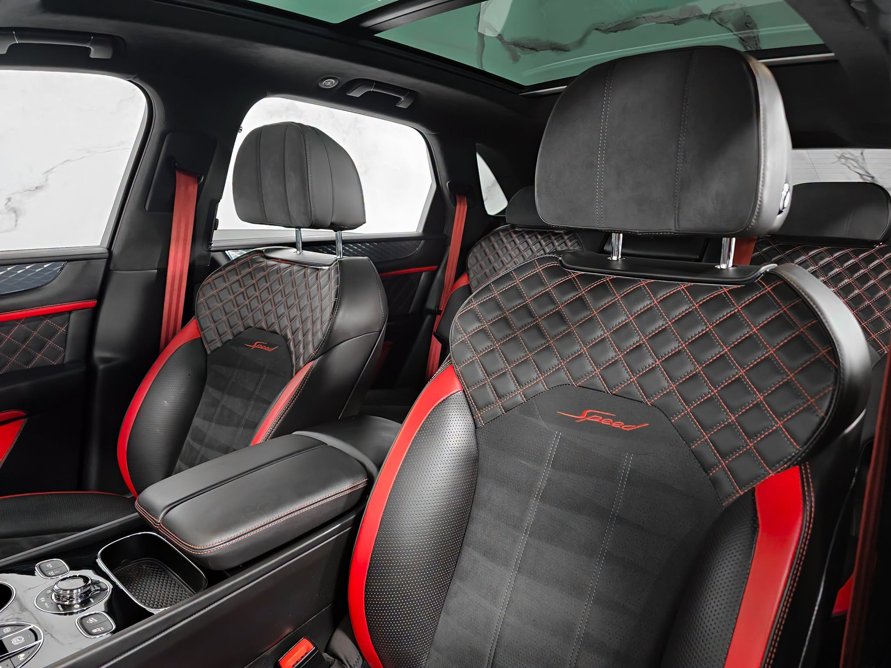

Exotic, Luxury & Performance Auto Detailing in Edmond, Oklahoma
- Hand washed
- Paint correction
- Premium protection
- Final quality inspection
Detailing is not simply washing a vehicle.
It is preserving the paint, protecting sensitive surfaces, restoring clarity, and maintaining the condition of a vehicle you value.
Exotic Motorsports of Oklahoma provides professional automotive detailing and protection services for exotic, luxury, performance, classic, collector, and premium daily-driven vehicles throughout Edmond and the greater Oklahoma City metro area.
From a Ferrari, Lamborghini, McLaren, or Bentley to a Porsche, BMW, Mercedes-Benz, Audi, Lexus, or Range Rover, every vehicle receives a careful evaluation and a process based on its actual condition.

Evaluated first. Then the process the vehicle actually needs.
Exotic, collector, and high-performance vehicles require a detailing team that understands more than surface appearance. Specialty paint finishes, carbon-fiber components, hand-finished interiors, performance wheels, convertible tops, delicate trim, and collector-grade materials require careful handling and the correct process.
Full Interior and Exterior Detailing
A full detail addresses the vehicle as a complete environment rather than treating the interior and exterior as unrelated services.
Every vehicle is inspected before work begins so we can recommend the appropriate process.
Request a full detailDepending on the condition of the vehicle and the services selected, a full detail may include
- Professional hand wash
- Wheel and tire cleaning
- Exterior surface cleaning
- Paint decontamination
- Clay bar treatment
- Interior vacuuming
- Interior surface cleaning
- Steam cleaning
- Hot water extraction
- Leather cleaning and care
- Fabric cleaning
- Interior and exterior glass cleaning
- Trim cleaning
- Final quality inspection
No automated car washes.No rushed, one-size-fits-all packages.No shortcuts around the surfaces that require real attention.
Paint Correction Swirl marks, light scratches, haze, oxidation, and other imperfections can prevent otherwise beautiful paint from looking its best.
Paint correction is a controlled polishing process used to improve the clarity, depth, and appearance of painted surfaces. Available paint correction services include:
- Single-step paint correction
- Multi-step paint correction
- Swirl reduction
- Scratch reduction
- Paint refinement
- Surface preparation for ceramic coating
Before recommending paint correction, our team evaluates the condition of the finish and discusses the result you want to achieve. Not every vehicle requires the same level of correction: a daily-driven luxury vehicle may benefit from a different approach than a collector car, show vehicle, exotic automobile, or vehicle being prepared for long-term protection.
Our goal is to recommend the appropriate process rather than automatically selling the most extensive option.
Schedule a paint evaluationCeramic Coating Long-term protection begins with proper preparation, not with the coating.
Ceramic coating in Edmond, Oklahoma. Ceramic coating is a professional protection service designed to help preserve treated surfaces and make ongoing vehicle maintenance easier. A successful coating installation begins before the coating product is applied: the vehicle must first be inspected, washed, decontaminated, evaluated, and properly prepared. Paint correction may be recommended when defects should be addressed before protection is installed.
Our ceramic coating options include
- Entry-level protection
- 3-year ceramic coating
- 5-year ceramic coating
- Premium long-term ceramic protection
- Complete vehicle protection packages
- Glass coating
- Wheel coating
- Trim coating
- Interior ceramic protection
- Leather protection
- Fabric protection
Our ceramic coating process
A ceramic coating service may include:
- Vehicle inspection
- Paint evaluation
- Photography and documentation
- Professional hand wash
- Chemical decontamination
- Clay treatment
- Paint correction when selected
- Surface preparation
- Coating installation
- Final quality inspection
- Customer delivery and maintenance guidance
We do not build our ceramic coating program around unrealistic lifetime-coating claims. Instead, we provide long-term protection programs supported by proper preparation, scheduled inspections, ongoing maintenance, and transparent expectations. The finished result depends on the condition of the vehicle, the preparation performed, the selected protection, and how the vehicle is maintained after installation.
Ask about ceramic coatingPaint Protection Film Physical protection for high-impact surfaces.
Paint protection film provides a physical layer of protection for selected painted areas of the vehicle. Coverage can be customized based on how the vehicle is driven, its value, the owner’s priorities, and the surfaces most exposed to road debris.
Available paint protection film options include
- Full-front paint protection film
- Track-package coverage
- Full-vehicle protection
- Custom coverage packages
- Windshield protection film
Paint protection film may be especially valuable for
- Exotic vehicles
- Performance cars
- Collector vehicles
- Luxury daily drivers
- Vehicles used for road trips
- Vehicles used for driving events
- Newly acquired vehicles
- Vehicles with recently corrected paint
A daily-driven luxury SUV may require a different protection strategy than a Ferrari, Porsche, collector car, or performance vehicle. Our team will review the vehicle and help determine which coverage areas make sense for your goals.
Request a PPF consultationInterior Detailing Leather, fabric, carpeting, carbon fiber, wood, metal, screens and plastics — not all treated the same way.
Premium and exotic interiors often combine leather, fabric, carpeting, carbon fiber, wood, metal, screens, plastics, and other sensitive surfaces. Our interior detailing services are designed to clean, refresh, and protect these materials without treating every surface the same. Available interior services include:
- Interior vacuuming
- Carpet cleaning
- Floor mat cleaning
- Steam cleaning
- Hot water extraction
- Leather cleaning
- Fabric cleaning
- Interior surface cleaning
- Interior glass cleaning
- Leather protection
- Fabric protection
- Interior ceramic protection
- Interior sanitization
- Odor treatment
- Ozone treatment
- Enzyme treatments
- Biohazard cleaning
The recommended process depends on the materials, condition, staining, odors, and level of correction required.
Request an interior detailExterior Detailing Clean the vehicle safely, remove bonded contamination, and prepare the surfaces for protection.
Exterior detailing goes beyond removing visible surface dirt. Our process is designed to clean the vehicle safely, remove bonded contamination, improve the finish, and prepare the surfaces for the selected level of protection. Available exterior services include:
- Professional hand washing
- Maintenance washing
- Exterior detailing
- Wheel cleaning
- Paint decontamination
- Chemical decontamination
- Clay bar treatment
- Trim care
- Convertible top cleaning and protection
- Engine bay detailing
- Headlight restoration
- Glass protection
- Wheel protection
- Trim protection
We use professional equipment and factory-safe washing methods selected for premium, exotic, and specialty vehicle finishes.
Automotive Window Tint Comfort, privacy, heat rejection, and the finished appearance of the vehicle.
Professional window film can improve comfort, privacy, heat rejection, and the finished appearance of your vehicle. Available window tint options include:
- Automotive window tint
- Ceramic window film
- Heat-rejection film
- Privacy tint
- Custom tint coverage
Our team can help you select an option based on the vehicle, your appearance preferences, and the type of performance you want from the film.
Request a window tint consultationYou do not have to own an exotic vehicle to expect exceptional detailing.
Our experience with these vehicles informs the standards we apply throughout the detailing department. Every vehicle is evaluated before work begins, and every completed service receives a final quality inspection before delivery.
Exotic and ultra-luxury vehicles
Our team provides detailing and vehicle protection for exotic and ultra-luxury manufacturers including:
- Ferrari
- Lamborghini
- McLaren
- Aston Martin
- Bentley
- Rolls-Royce
- Maserati
- Lotus
Performance, classic, and collector vehicles
- Porsche
- BMW M
- Mercedes-AMG
- Audi RS
- Corvette
- Viper
- High-performance domestic vehicles
- Classic European vehicles
- Restomod vehicles
- Collector cars
Professional detailing for premium daily drivers
Premium daily drivers face regular exposure to weather, road debris, dirt, spills, interior wear, pet hair, and the demands of everyday use. We provide professional detailing and protection for vehicles from manufacturers including:
- BMW
- Mercedes-Benz
- Audi
- Porsche
- Lexus
- Land Rover
- Range Rover
- Jaguar
- Volvo
- Acura
- Infiniti
- Cadillac
- Genesis
- Tesla
The same care used when working around a Ferrari’s finish or a Bentley’s interior is applied to the BMW, Mercedes-Benz, Audi, Lexus, Porsche, or Range Rover you drive every day.
Every inch matters
From the paint to the stitching, from the wheels to the engine bay.
Built around a different standard.
The detailing market includes automated washes, mobile operators, high-volume shops, and businesses competing primarily on price.
Exotic Motorsports of Oklahoma is built around a different standard. Our reputation is built on more than the final shine. It is built on how your vehicle is received, how its condition is documented, how clearly we communicate, and how carefully every surface is treated.
Not every vehicle requires multi-step paint correction. Not every customer needs full-vehicle paint protection film. Not every surface requires the longest available ceramic protection.
Our responsibility is to evaluate the vehicle, understand your goals, and recommend the level of service that makes sense — a professional maintenance wash, an interior detail, a full interior and exterior detail, paint correction, ceramic coating, paint protection film, window tint, or a combination of detailing and protection services.
The recommendation should fit the vehicle, its condition, and the way you plan to use it.
Our customers choose us for
- Exotic and luxury vehicle experience
- A clean, organized professional facility
- Professional paint correction
- Premium ceramic coating options
- Paint protection film
- Factory-safe hand-washing methods
- No automated car washes
- Paint thickness awareness
- Premium chemicals and professional equipment
- Before-and-after documentation
- Transparent recommendations
- Direct communication
- Careful vehicle handling
- Consistent quality control
- Final inspection before delivery
- Select pickup and delivery options
- Long-term vehicle maintenance support


What customers say
-
They looked at the paint first and told me a single stage was enough. No one had talked me out of the bigger job before.
Sample name · via Google
-
The interior came back better than I have seen it, and every surface was treated the way that surface needed rather than all of them the same way.
Sample name · via Google
-
They explained what the coating would do and what it would not, then showed me how to keep it. No lifetime promises, which is why I believed the rest of it.
Sample name · via Google
Every vehicle receives a structured process based on its condition and the services selected.
The finished result depends on the condition of the vehicle, the preparation performed, the selected protection, and how the vehicle is maintained afterwards.
Assessment
Step 1
Vehicle Inspection
We inspect the vehicle and discuss your concerns, expectations, and intended outcome.
Step 2
Paint and Surface Evaluation
The condition of the paint, trim, glass, wheels, interior materials, and other relevant surfaces is evaluated.
Step 3
Photography and Documentation
The condition of the vehicle is documented before work begins.
Decontamination
Step 4
Professional Wash
The vehicle is washed using professional methods and products selected for its finish.
Step 5
Chemical Decontamination
Bonded contaminants are treated when required.
Step 6
Clay Treatment
Clay treatment may be used to remove contamination that remains attached to the painted surfaces.
Correction & protection
Step 7
Paint Correction
When selected, the paint is corrected to the appropriate level based on its condition and the customer’s goals.
Step 8
Surface Preparation
Surfaces are prepared for the selected coating or protection product.
Step 9
Protection Installation
The selected ceramic coating, paint protection film, window film, or surface treatment is installed.
Delivery
Step 10
Final Quality Inspection
The completed work is carefully inspected before the vehicle is released.
Step 11
Customer Delivery
We review the completed services and provide appropriate maintenance guidance.
Transparent recommendations without overselling
Our responsibility is to evaluate the vehicle, understand your goals, and recommend the level of service that makes sense. That may be:
- A professional maintenance wash
- An interior detail
- A full interior and exterior detail
- Paint correction
- Ceramic coating
- Paint protection film
- Window tint
- A combination of detailing and protection services
Our responsibility is to evaluate the vehicle, understand your goals, and recommend the level of service that makes sense.
The recommendation should fit the vehicle, its condition, and the way you plan to use it.

Our reputation is not built on completing one impressive exotic vehicle.
Consistency
It is built on delivering consistent results and maintaining the same standards from one appointment to the next — not on one car that photographed well.
Communication
Communicating clearly about what the vehicle needs, what it does not, and what the finished result will depend on once it leaves us.
Respect
Respecting every vehicle. Our team approaches each one with the care we would expect for our own, whatever it is worth and whoever is watching.
No shortcuts. No automated car washes. No one-size-fits-all recommendations — just professional care focused on the condition, protection, presentation, and long-term enjoyment of your vehicle.
A single detail can improve a vehicle. A program preserves it.
Our maintenance services are designed for owners who want their vehicles professionally cared for on a recurring basis rather than waiting until the interior and exterior require significant restoration.
Maintenance Detailing and Long-Term Vehicle Care A consistent program helps preserve the condition a single detail creates.
A single detail can improve a vehicle. A consistent maintenance program helps preserve that condition over time.
Available maintenance services include
- Hand washing
- Maintenance washing
- Interior maintenance
- Exterior maintenance
- Ceramic coating inspections
- Ceramic coating maintenance
- Glass maintenance
- Wheel maintenance
- Trim maintenance
- Interior protection maintenance
- Scheduled vehicle-care programs
A maintenance program may be especially valuable for
- Exotic vehicles
- Ceramic-coated vehicles
- Collector cars
- Performance vehicles
- Daily-driven luxury vehicles
- Executive vehicles
- Vehicles maintained for resale
- Vehicles being preserved for long-term ownership
Our team can recommend a maintenance schedule based on how frequently the vehicle is driven, where it is stored, and how it is used.
Ask about a maintenance programOdor Removal and Interior Deodorization Odors can become trapped in upholstery, carpeting, ventilation systems, and other interior materials.
Available deodorization and interior-treatment services include:
- Ozone treatment
- Interior sanitization
- Odor elimination treatments
- Smoke odor treatment
- Pet odor treatment
- Mold odor treatment
- HVAC odor treatment
- Enzyme treatments
- Steam sanitation
- Hot water extraction
The recommended process depends on the source and severity of the odor. Because different odors require different treatments, the vehicle must be evaluated before the proper process can be recommended.
Request an interior evaluationSpecialty CO₂ Dry Ice Cleaning A controlled cleaning process for select specialty applications.
CO₂ dry ice cleaning is available for select specialty applications where a controlled cleaning process is appropriate. Potential applications include:
- Collector vehicles
- Classic vehicles
- Engine bays
- Undercarriages
- Sensitive restoration projects
- Electrical-safe cleaning applications
- Classic vehicle preservation
This is a specialty service, and not every vehicle or surface is an appropriate candidate. Our team will evaluate the vehicle and the desired outcome before recommending dry ice cleaning.
Ask about dry ice cleaningConvertible Top, Engine Bay and Specialty Detailing Some vehicles require focused care beyond a standard interior or exterior detail.
Available specialty services include:
- Convertible top cleaning
- Convertible top protection
- Engine bay detailing
- Wheel coating
- Glass coating
- Trim coating
- Headlight restoration
- Scratch reduction
- Specialty surface cleaning
- Collector vehicle preparation
- Classic vehicle preservation
Contact our team with your vehicle and the service you are considering. We will determine the appropriate process after evaluating its materials and condition.
Coordinate Detailing with Your Service Visit Mechanical condition, appearance, and protection through one team.
Exotic Motorsports of Oklahoma provides both professional automotive service and detailing from the same operation. When appropriate, detailing and protection services can be coordinated while your vehicle is already visiting us for maintenance, inspection, diagnostics, or repair.
This allows you to address the vehicle’s mechanical condition, appearance, and protection through one trusted team. Contact us before your appointment so we can review availability and coordinate the requested services.
Concierge Vehicle Pickup and Delivery Select concierge pickup and delivery services are available.
Vehicle transportation can be especially helpful for:
- Exotic vehicles
- Collector cars
- Performance vehicles
- Busy vehicle owners
- Executive vehicles
- Vehicles receiving multi-stage detailing or protection
- Customers coordinating service and detailing
Availability may depend on the vehicle, location, requested services, and scheduling. Contact our team to discuss your needs.
Ask about pickup and deliveryCorporate and Fleet Detailing Programs Custom vehicle-care solutions for businesses, executive vehicles, dealerships, and commercial accounts.
We offer custom vehicle-care solutions for businesses, executive vehicles, dealerships, and commercial accounts. Available options include:
- Executive vehicle maintenance
- Corporate fleet washing
- Dealer inventory detailing
- Commercial detailing accounts
- Monthly maintenance plans
- Weekly service schedules
- Volume discounts
- Priority scheduling
- Pickup and delivery
- Custom billing solutions
Programs can be structured around the number of vehicles, desired frequency, vehicle types, and requested services.
Request fleet informationSchedule professional auto detailing in Edmond, Oklahoma.
Exotic Motorsports of Oklahoma provides professional detailing, paint correction, ceramic coating, paint protection film, window tint, interior care, odor treatment, and specialty vehicle services throughout Edmond and the Oklahoma City metro area.
Edmond, OK 73013
Our detailing promise
Every vehicle receives a process based on its condition, materials, and the owner’s goals.
Every completed service is reviewed before delivery. Our name is attached to the finished work. That matters to us.